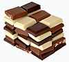

chocolate
matter

Source: Wikipedia
Wikipedia Page (Something wrong with this association? Let us know.)
Wikidata Page (Something wrong with this association? Let us know.)
Occurs in:
- chocolate_conching__duration
- chocolate__heat_capacity_ratio
- chocolate__mass-per-volume_density
- chocolate_isobaric-process__mass-specific_heat_capacity
- chocolate_isochoric-process__mass-specific_heat_capacity
- chocolate~melting-point__temperature
- chocolate~metabolizable__energy-per-mass_density
- chocolate_tempering__duration
- chocolate__thermal_conductivity
- chocolate__thermal_diffusivity
- chocolate__thermal_inertia
- chocolate__thermal_resistivity
- chocolate_isobaric-process__volume-specific_heat_capacity
- chocolate_isochoric-process__volume-specific_heat_capacity
- chocolate_cacao__mass_concentration
- chocolate_caffeine__mass_concentration
- chocolate_carbohydrate__mass_concentration
- chocolate_cholesterol__mass_concentration
- chocolate_fat~monounsaturated__mass_concentration
- chocolate_fat~polyunsaturated__mass_concentration
- chocolate_fat~saturated__mass_concentration
- chocolate_fat__mass_concentration
- chocolate_flavanol__mass_concentration
- chocolate_lecithin__mass_concentration
- chocolate_liquor__mass_concentration
- chocolate~liquid__apparent_viscosity
- chocolate~liquid__casson-model_a_parameter
- chocolate~liquid__herschel-bulkley_coefficient
- chocolate~liquid__herschel-bulkley_exponent
- chocolate~liquid__shear_kinematic_viscosity
- chocolate~liquid__yield_stress
- chocolate~liquid_water__volume_fraction